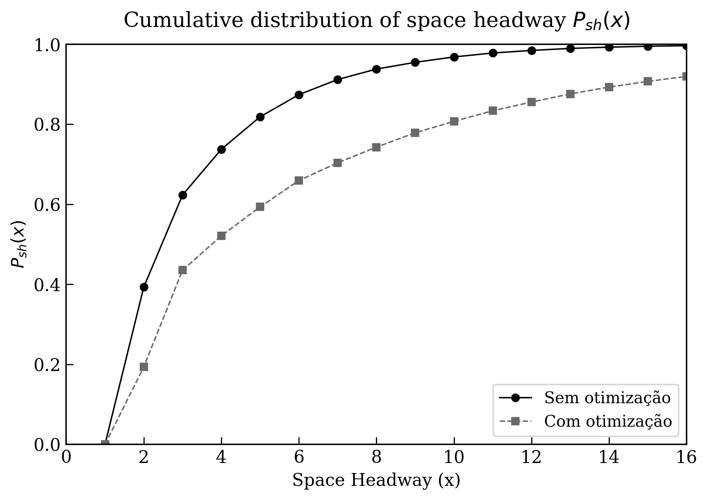

Tecnologia • Machine Learning • HPC • Física Computacional
Estudante de Física Computacional (UFF) com experiência em tecnologia, análise de dados, computação científica, Machine Learning e HPC. Atuei no suporte a sistemas MES, SAP e infraestrutura crítica, além de possuir experiência com Python, Fortran 90, SQL e desenvolvimento de soluções computacionais. Atualmente desenvolvo meu TCC focado em classificação astronômica com redes neurais e um projeto de otimização e paralelização em HPC.
Rede neural supervisionada desenvolvida para classificar objetos astronômicos como GALAXY, STAR e QSO utilizando fotometria multibanda do SDSS-DR16 combinada com dados do WISE. O modelo alcançou aproximadamente 93% de acurácia.
Implementação em Fortran 90 de um modelo de tráfego urbano (BML – Regra A), com análise física do regime livre e congestionado e paralelização com OpenMP.
 🔗 Ver projeto completo no GitHubClassificação Star/Galaxy/QSO usando FLAML, XGBoost, LightGBM e CatBoost, com pipeline de pré-processamento, métricas e validações cruzadas.